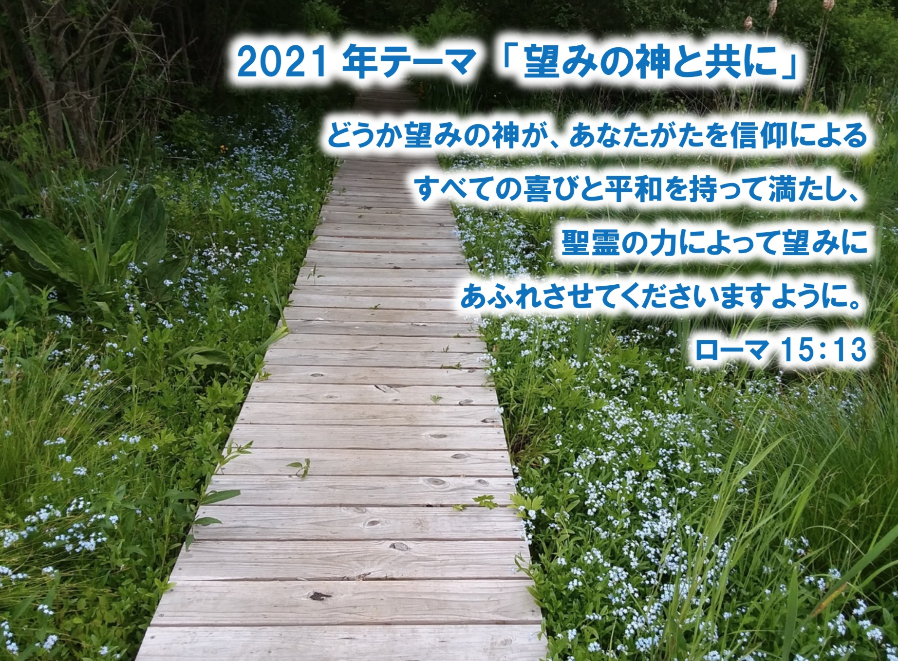

|

すべての掲載記事・写真の著作権はニューヨークめぐみ教会に帰属します。
Copyright (c) 2021 Japanese Grace Church of New York. All Rights Reserved
|
Japanese Grace Church of New York
(Japanese Ministry of Ridgeway Church)
ニューヨークめぐみ教会
465 Ridgeway, White Plains, NY 10605
E-Mail: msasakawa（ｱｯﾄ）ridgewaychurch.com
牧師／笹川雅弘 Masahiro Sasakawa
現地連絡先／ 914-310-9000（和泉）
All contents in this site are in Japanese.
（更新／2021年5月6日）
対面礼拝を再開しています！
★笹川牧師夫妻は4月12日にNY入りしました！感謝。
☆礼拝はオンライン、対面の両方で行っています。
★新しいウェブページを立ち上げ中です。ご期待ください。
|